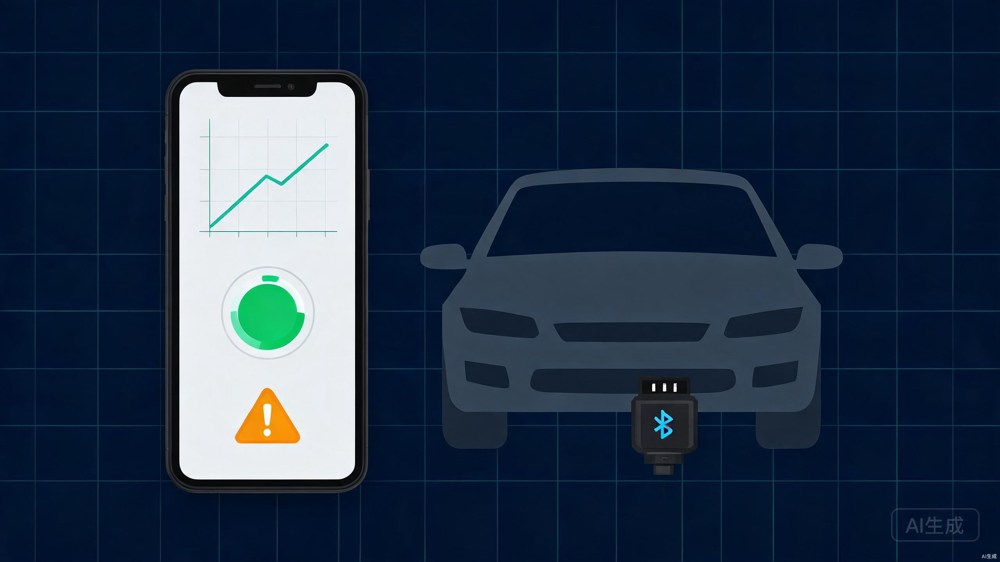

核心结论前置：现有 OBD 工具要么太专业（Torque Pro 面向技师），要么太简陋（ELM327 基础读码）。面向普通车主的"看得懂、有洞察"的汽车健康看板是一个明确的空白市场。深圳 ELM327 硬件成本仅 2-3 美元，海外竞品 Vgate iCar 2 售价 $27.54，软件 + 硬件的利润空间充足[1]。
一、市场分析与竞品调研
1.1 现有竞品分析
| 产品 | 定位 | 界面复杂度 | 数据可视化 | 面向用户 | 定价 | 弱点 |
|---|---|---|---|---|---|---|
| Torque Pro | 专业诊断 | 极高 | 100+参数仪表盘 | 技师/发烧友 | $4.95 买断 | 普通车主完全看不懂 |
| YMOBD | 读码+基础数据 | 中高 | 基础列表 | 车主/技师 | 免费+广告 | 无洞察分析，像工具说明书 |
| Car Scanner | 通用扫描 | 中高 | 图表但专业 | 进阶车主 | 免费/付费版 | 界面老旧，无健康评分 |
| tesLAX | 特斯拉专用 | 中 | 较好 | 特斯拉车主 | $25-50 买断 | 仅限特斯拉，适配器贵 |
| Vgate iCar 2 | 硬件+配套APP | 中 | 一般 | 通用车主 | $27.54（含硬件） | APP 体验一般，无持续服务 |
1.2 市场空白
上述所有产品都有一个共同问题：它们都是在"显示数据"，而不是"解释数据"。普通车主拿到一个故障码 P0171，不知道是什么意思，更不知道应该怎么办。
你的机会在于做一个"汽车健康管家"，把冷冰冰的 OBD 数据翻译成车主能理解的语言：
- 不说"短期燃油修正值 -12.5%"，而说"燃油混合偏浓，可能导致油耗上升15%，建议检查氧传感器"
- 不说"催化剂温度 482C"，而说"三元催化器工作正常，温度在健康区间"
- 用红黄绿三色健康评分，替代密密麻麻的数字表格
1.3 市场规模
二、产品定位与差异化策略
2.1 一句话定位
"让普通车主也能看懂自己车的健康状况 — 插上 OBD 蓝牙适配器，打开 App，30 秒获得一份汽车健康报告。"
2.2 核心差异化
翻译层 — 数据转人话
把 OBD PID 数据翻译成车主能懂的结论和建议。例如："发动机 coolant 温度偏低" → "冷却液温度偏低，可能导致暖风热得慢、油耗略增"
AI 生成 知识库趋势层 — 不只是当前值
记录每次行驶的数据，生成油耗趋势、电池健康度变化曲线、排放变化趋势。让车主看到自己的车是"越来越好"还是"越来越差"。
数据趋势 历史对比预警层 — 提前发现问题
基于数据异常模式识别潜在故障。例如：长期燃油修正值持续偏离 → 提前预警"喷油系统可能有问题，建议尽快检查"。
异常检测 主动预警评分层 — 一目了然
综合发动机、排放、电池、冷却四大系统，给出 0-100 分的整车健康评分。红黄绿三色直观展示。
健康评分 可视化2.3 目标用户画像
主要用户：25-45 岁私家车主
- 有车但不太懂机械知识（非技师）
- 关心用车成本（油耗、保养）
- 担心被 4S 店/修理厂"坑"
- 愿意花小钱买安心（对标：机油检测仪、胎压监测器的心理价位）
- 开车频率：每周至少 2-3 次
次要用户：小型维修店 / 二手车检测
- 需要快速给车辆做"体检"的工具
- 需要生成可分享的客户报告
- 可作为 B 端增值服务（二手车检测报告）
三、硬件方案与供应链
3.1 方案选择：ELM327 蓝牙适配器贴牌
不要自己研发硬件，这是最大的坑。直接采购成熟的 ELM327 方案，做贴牌定制。
| 方案 | 单件成本 | 起订量 | 优劣势 | 推荐度 |
|---|---|---|---|---|
| ELM327 基础版 | 15-20 元 | 100 件 | 成本最低，兼容性好，但外观公模无差异 | 起步期推荐 |
| QBD327 芯方案 | ~7 元 | 5000 件 | 成本极低，但需要大批量；深圳芯方案可做到 1 美金[2] | 规模化后 |
| 定制外壳 + 品牌 | +3-5 元/件 | 500 件 | 外观差异化，品牌感强 | 中期升级 |
3.2 采购渠道
起步阶段：1688 现货采购
搜索关键词"ELM327 蓝牙 OBD2"。选择支持加工定制的深圳/东莞供应商。先买 20-50 个样品测试兼容性，成本约 400-1000 元。
验证阶段：小批量贴牌
确认样品质量后，订购 100-200 件定制包装（印上你的品牌 Logo）。印刷成本约 2-3 元/件。总价约 2000-4000 元。
规模化：深度定制
销量稳定后（月销 500+），可定制外壳模具（约 1-2 万元开模费），或者与方案商谈芯片级定制（增加自动休眠、低功耗等功能）。
3.3 硬件注意事项
必须解决的硬件问题
- 电瓶亏电问题：OBD 接口有 12V 常电，早期产品导致电瓶亏电。选择带自动休眠的适配器（熄火 30 分钟后自动断电），或在 App 中提醒用户拔下[3]
- 蓝牙兼容性：确保同时支持 BLE（低功耗蓝牙，iOS 友好）和经典蓝牙（Android 兼容）
- 协议覆盖：ELM327 默认支持 ISO 9141-2、ISO 14230、ISO 15765 等主流协议，覆盖 95%+ 的 2004 年后车型
四、技术架构
4.1 技术栈建议
前端 App
React Native 或 Flutter
一套代码同时覆盖 iOS + Android。蓝牙通信有成熟库（react-native-ble-plx / flutter_blue_plus）。
跨平台 蓝牙通信后端服务
Node.js + Express 或 Next.js API Routes
处理用户数据存储、故障码知识库查询、健康评分算法。
轻量 快速开发数据库
PostgreSQL + Redis
PG 存用户和车辆历史数据，Redis 缓存故障码查询结果。
关系型 缓存部署
Vercel + Supabase
Vercel 托管前端和 API，Supabase 提供托管 PG + Auth，零运维。
Serverless 零运维4.2 蓝牙通信核心流程
ATZ // 重置适配器
ATE0 // 关闭回显
ATL1 // 允许长消息
010C // 请求 PID 010C = 发动机转速 (RPM)
010D // 请求 PID 010D = 车速 (km/h)
015C // 请求 PID 015C = 发动机机油温度
0133 // 请求 PID 0133 = 绝对大气压力
// 响应格式: 41 0C 1F 40 → RPM = (0x1F * 256 + 0x40) / 4 = 1984
4.3 核心数据层设计
OBD PID 数据分类（MVP 阶段）
- 发动机系统（5个核心 PID）：转速、负荷、冷却液温度、进气温度、燃油压力
- 排放系统（3个核心 PID）：氧传感器电压、短期/长期燃油修正、催化剂温度
- 电池系统（2个核心 PID）：电池电压、充电系统状态
- 行驶数据（计算值）：瞬时油耗、平均油耗、行驶里程、急加速/急刹车次数
4.4 健康评分算法（简化版）
score = 100
if coolant_temp < 70 or coolant_temp > 110: score -= 15
if long_term_fuel_trim > 10 or < -10: score -= 20
if engine_load > 85% for > 60s: score -= 10
if misfire_detected: score -= 25
return max(0, score) // 0-100，绿(>80) 黄(50-80) 红(<50)
五、MVP 功能清单
5.1 Phase 1：核心体验（第 1-6 周）
| 模块 | 功能 | 优先级 | 预估工时 |
|---|---|---|---|
| 蓝牙连接 | 扫描 → 配对 → 连接 ELM327，发送 AT 指令 | P0 | 3-4 天 |
| 数据采集 | 读取 10 个核心 PID，实时显示 | P0 | 2-3 天 |
| 故障码读取 | 读取 DTC，显示故障码 + 中文解释 + 建议 | P0 | 3-4 天 |
| 健康评分 | 基于 4 个系统给出 0-100 分 + 三色状态 | P0 | 2 天 |
| 用户系统 | 注册/登录，绑定车辆（品牌/型号/年份/VIN） | P1 | 2-3 天 |
| 历史记录 | 本地存储每次检测数据，查看历史趋势 | P1 | 2 天 |
5.2 Phase 2：增值功能（第 7-12 周）
| 模块 | 功能 | 说明 |
|---|---|---|
| 油耗分析 | 基于 MAF/MAP 计算瞬时油耗，生成油耗趋势图 | 用 PID 010D + 010C + 0110 计算 |
| 驾驶行为评分 | 急加速/急刹车/急转弯检测，给出驾驶建议 | 用加速度传感器 + OBD 车速变化 |
| 保养提醒 | 基于行驶里程和时间，推送保养提醒 | 需要云端同步 |
| 检测报告分享 | 生成 PDF/图片报告，可分享到微信/朋友圈 | 社交裂变的关键功能 |
| AI 解读 | 接入大模型 API，把数据翻译成自然语言建议 | 差异化核心 |
六、商业模式与定价
6.1 收入结构
硬件收入（一次性）
OBD 蓝牙适配器套装
成本 20 元 → 售价 79-99 元
毛利率约 75-80%
高毛利 一次获客软件订阅（经常性）
高级功能订阅
免费版：基础读码 + 健康评分
Pro 版（9.9 元/月）：趋势分析 + AI 解读 + 保养提醒
经常性收入 LTV 高B 端服务（增值）
二手车检测报告
向二手车商/检测平台提供 API 接口或白标解决方案
按检测次数收费：2-5 元/次
长尾收入数据服务（远期）
匿名化车辆数据
车辆健康大数据（需匿名化 + 用户授权）
卖给保险公司/汽配平台
远期 合规优先6.2 定价策略
| 项目 | 免费版 | Pro 版 | 硬件套装 |
|---|---|---|---|
| 价格 | 0 元 | 9.9 元/月 或 79 元/年 | 79-99 元（含 1 个月 Pro） |
| 读码清码 | 读码 + 基础解释 | 读码 + 深度解释 + 维修建议 | 同 Pro |
| 健康评分 | 单次评分 | 历史趋势 + 变化预警 | 同 Pro |
| 油耗/驾驶 | 不可见 | 完整趋势 + 建议 | 同 Pro |
| AI 解读 | 不可见 | 无限次 | 同 Pro |
| 分享报告 | 基础版 | 专业版 PDF | 同 Pro |
6.3 财务模型（乐观 / 中性 / 保守）
| 指标 | 保守（6个月） | 中性（6个月） | 乐观（6个月） |
|---|---|---|---|
| 硬件销量 | 200 件 | 800 件 | 2000 件 |
| 硬件收入（@79元） | 15,800 元 | 63,200 元 | 158,000 元 |
| Pro 订阅转化率 | 5% | 12% | 20% |
| 月订阅收入 | ~99 元 | ~950 元 | ~3,960 元 |
| 硬件成本 | 4,000 元 | 16,000 元 | 40,000 元 |
| 净利润（6个月） | ~10,000 元 | ~40,000 元 | ~100,000 元 |
七、6个月落地计划
验证硬件 + 调研竞品
在 1688 买 5-10 个不同品牌的 ELM327 适配器，测试兼容性。同时深度体验 Torque Pro / YMOBD / Car Scanner，记录它们的 UX 问题。建立一个 OBD PID 数据库（中文名称、单位、正常范围）。
蓝牙通信打通
用 React Native 或 Flutter 做一个 Demo：扫描蓝牙设备 → 连接 ELM327 → 发送 AT 指令 → 读取 RPM 和车速。这是整个产品的技术核心，必须先验证可行。
核心功能上线
完成 Phase 1 所有功能：蓝牙连接、数据采集、故障码读取、健康评分、用户系统。目标：在 3 辆不同品牌的车上完整测试通过。
找 20 个真实用户内测
在汽车论坛、小红书、车主群招募内测用户。收集反馈，修复 Bug。重点是验证：普通车主能不能看懂健康评分？故障码解释够不够清楚？
上架应用商店 + 开始卖货
App 上架 iOS App Store 和各大安卓应用市场。同时开通微信小店/有赞商城售卖 OBD 适配器套装。开始小规模投放（小红书信息流、抖音短视频）。
Pro 功能上线 + 渠道深耕
上线 Phase 2 功能（油耗分析、AI 解读、分享报告）。分析用户行为数据，优化转化漏斗。尝试内容营销：在抖音/小红书做"30 秒检测你的车健不健康"系列短视频。
供应链优化 + B 端探索
如果硬件月销超过 300 件，与供应商谈更低的价格。同时接触 1-2 家二手车平台，探索 B 端合作机会。评估是否需要招人（客服/运营）。
八、风险与应对
| 风险 | 概率 | 影响 | 应对策略 |
|---|---|---|---|
| 蓝牙兼容性差 | 中 | 高 | MVP 阶段测试 10+ 车型；准备适配器兼容性白名单；提供"不支持全额退款" |
| 用户看不懂数据 | 中 | 中 | 产品核心就是解决这个——用 AI + 知识库把数据翻译成人话；内测阶段重点验证 |
| 获客成本过高 | 中高 | 高 | 先做内容营销（短视频/文章），降低付费投放依赖；利用检测报告分享做社交裂变 |
| 大厂入局（如小米汽车） | 低 | 高 | 专注"跨品牌通用"+"老车市场"，新车自带 OTA 诊断；做社区和内容建立粘性 |
| 硬件质量问题 | 中 | 中 | 多供应商备选；前 500 件严格质检；提供 1 年质保建立信任 |
| 政策法规风险 | 低 | 中 | 产品定位为"信息展示工具"而非"诊断设备"；免责声明；不替代专业维修建议 |
九、本周就可以开始的事
买 3 个 ELM327 适配器（花费 ~60 元）
在 1688 或淘宝买 3 个不同价位的 ELM327 蓝牙适配器（15元/30元/50元各一个），亲自测试在自己的车上能不能连、能不能读到数据。
装 Torque Pro + YMOBD，深度体验
花 2 小时深度使用现有竞品，记录至少 10 个"我觉得这个设计不好"的点。这些就是你的产品差异化输入。
写一份"车主访谈提纲"
列出 5-10 个问题，用于访谈有车的亲友。例如："你上次去修车前，知不知道车出了什么问题？""如果你能看到车的实时健康状态，你最关心什么？"
搭建技术 Demo 环境
创建一个 React Native 或 Flutter 空项目，安装蓝牙 BLE 库，尝试扫描并连接你的 ELM327 适配器。即使只能读到 RPM，也算迈出了第一步。
最后提醒：这个产品最大的风险不是技术，而是"你觉得车主需要，但车主其实不在意"。所以在写任何一行产品代码之前，先用 2 周时间验证：车主真的愿意为"看懂车的健康状态"付钱吗？如果答案是肯定的，你手里有一手汽车诊断行业经验 + 前端开发能力 + 深圳硬件供应链，这是一个近乎完美的组合。